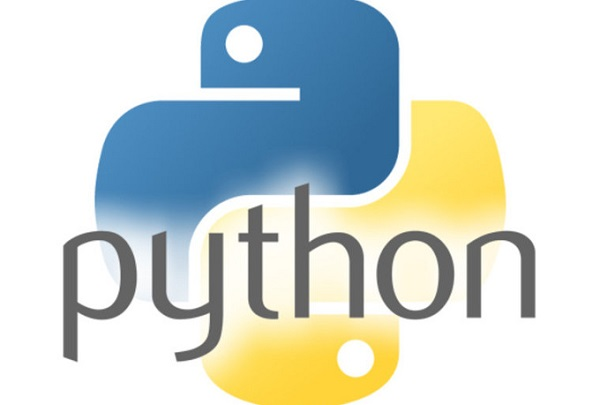

Python é uma linguagem de programação de alto nível, interpretada, de script, imperativa, orientada a objetos, funcional, de tipagem dinâmica e forte.
Foi lançada por Guido van Rossum em 1991.
Atualmente possui um modelo de desenvolvimento comunitário, aberto e gerenciado pela organização sem fins lucrativos Python Software Foundation. Apesar de várias partes da linguagem possuírem padrões e especificações formais, a linguagem como um todo não é formalmente especificada. O padrão de facto é a implementação CPython.
A linguagem foi projetada com a filosofia de enfatizar a importância do esforço do programador sobre o esforço computacional. Prioriza a legibilidade do código sobre a velocidade ou expressividade.
Combina uma sintaxe concisa e clara com os recursos poderosos de sua biblioteca padrão e por módulos e frameworks desenvolvidos por terceiros.

Python é uma linguagem de propósito geral de alto nível, multi paradigma, suporta o
paradigma orientado a objetos, imperativo, funcional e procedural.
Possui tipagem dinâmica e uma de suas principais características é permitir a fácil leitura do código e
exigir poucas linhas de código se comparado ao mesmo programa em outras
linguagens.
Devido às suas características, ela é principalmente utilizada para
processamento de textos, dados científicos e criação de CGIs para páginas dinâmicas para a
web.